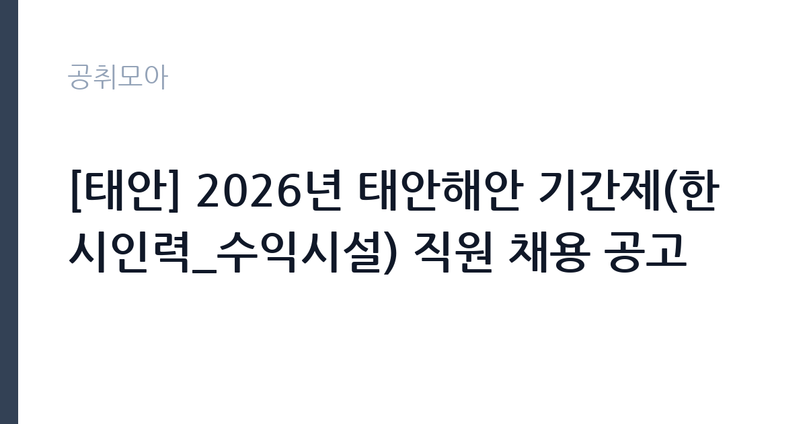

[공공기관] [태안] 2026년 태안해안 기간제(한시인력_수익시설) 직원 채용 공고
국립공원공단 태안해안국립공원사무소 · 충남 · 마감 2026-11-02 (D-11) · 출처 나라일터

한눈에 보는 모집 조건
| 기관 | 국립공원공단 태안해안국립공원사무소 |
|---|---|
| 공고명 | [태안] 2026년 태안해안 기간제(한시인력_수익시설) 직원 채용 공고 |
| 고용형태 | 일용직 |
| 근무지 | 충남 |
| 게시일 | 2026-10-22 |
| 마감일 | 2026-11-02 (D-11) |
지원자격, 이렇게 읽으세요
- 한시인력(수익시설) 1명
- 접수 ~2026-11-02 마감
- 세부 조건은 원문 공고문 확인
일용·단기 근로는 정해진 사업 기간이나 단기 업무를 위해 채용되는 형태입니다. 근무 일수와 일당이 정해지고 사업 종료 시 근로관계가 끝납니다. 계절 사업이나 행사 지원, 단기 대체 인력으로 활용되는 경우가 대표적입니다. 이번 공고는 국립공원공단 태안해안국립공원사무소에서 직접 진행하는 자체 전형으로, 응시자격과 제출서류는 공고문에 항목별로 제시됩니다. 시설 관리 직무는 관련 자격이나 경력을 우대하는 경우가 많습니다. 전기기능사나 설비보수, 소방설비 관련 자격이 있으면 유리하고 일부 공고는 자격을 필수로 요구합니다. 운전면허와 교대 근무 가능 여부도 자주 확인하는 항목입니다. 시설 규모가 큰 기관은 담당 구역이 나뉘어 있어 구체적인 업무 범위를 공고문에서 확인해야 합니다. 국가공무원법상 결격사유와 신체 조건 확인 절차가 있습니다. 서류는 접수 마감 이후 보완이 되지 않으므로 자격 요건과 증빙 서류를 마감 전에 모두 갖춰야 합니다. 공고문에 명시된 우대 사항은 해당 여부를 확인해 증빙을 첨부해야 가점이 반영됩니다. 공고문의 응시자격 표를 보면 자격 항목이 여러 줄로 나뉘어 있으므로, 각 줄을 하나씩 체크하며 본인 해당 여부를 표시해 두면 누락을 줄일 수 있습니다.
이 공고의 포인트
이 공고의 첫 번째 포인트는 고용 형태입니다. 사업 기간에 맞춰 채용되므로 근무 일수와 보수가 비교적 명확합니다. 대신 다음 근무지를 별도로 구해야 합니다. 두 번째는 업무 범위가 명확하다는 점입니다. 시설 관리·경비 직무로 채용되므로 배치 이후 담당 업무가 크게 흔들리지 않습니다. 세 번째는 근무지입니다. 충남 지역 근무로 수도권 공고에 비해 지원자 분포가 넓지 않아 상대적으로 경쟁이 분산되는 경우가 있습니다. 지역 기반 채용이라 거주지와 통근 가능성이 실질적인 판단 기준이 됩니다. 같은 직무 공고 중에서는 접수 마감이 가장 빨라 일정을 앞당겨 잡아야 합니다. 다만 선발 인원이 1명으로 많지 않아 자격을 갖춘 지원자가 몰리면 경쟁률이 높아질 수 있습니다.
전형은 어떻게 진행되나
서류전형과 면접전형 외에 직무수행능력 평가가 붙는 경우가 있습니다. 평가 방식은 공고문에 구체적으로 적혀 있으므로 어떤 항목에 배점이 높은지 먼저 파악하십시오. 면접에서는 지원 동기보다 실제 업무 경험에 대한 질문이 많고, 답변의 구체성이 평가를 가릅니다. 전형 일정은 서류 마감 이후 빠르게 진행되므로 연락 가능한 번호를 정확히 기재하고 문자와 메일을 수시로 확인해야 합니다. 최종 단계에서는 결격사유 조회와 신체검사가 진행됩니다. 온라인 접수는 마감 시각이 분 단위로 정해지므로 시스템 시간을 기준으로 판단해야 합니다.
원문에서 확인한 전형 방식
태안해안국립공원사무소 공고 제2026-32호 2026년 태안해안 기간제(한시인력_수익시설) 직원 채용 국립공원공단 태안해안국립공원사무소에서 기간제 직원을 채용하고자 아래와 같이 공고합니다. 1. 모집분야 및 인원: 기간제(수익시설) 1명 2. 접수방법: 방문 및 우편 접수 3. 전형일정 ㅇ 접수기간: 2026.10.22.(목) ~ 11.2.(월) 18:00 ㅇ 서류전형 합격자 발표: 2026.11.4.(수) ㅇ 면접전형: 2026.11.5.(목) ㅇ 최종 합격자 발표: 2026.11.6.(금) ㅇ 근무시작 예정일: 2026.11.9.(월) *근무기간: 2026.11.9.~12.31. ※ 자세한 사항은 첨부한 공고문을 참조하시기 바라며, 채용일정은 내부 사정에 의해 다소 변동될 수 있습니다. 기타 문의사항은 태안해안국립공원사무소(☎041-672-9737, 행정과 인사담당자)으로 문의하시기 바랍니다.
이런 분께 추천해요
- 시설·설비 점검 경력이나 관련 자격을 가진 분
- 교대·야간 근무와 비상 출동에 응할 수 있는 분
- 안전 점검 기록을 성실히 관리하는 분
지원 전 체크리스트
- 응시자격 요건과 경력 기준을 충족하는가 — 경력은 증명서로 입증해야 합니다
- 근무 기간과 일당·월급 지급 방식을 확인했는가
- 제출서류 목록을 모두 준비했는가 — 누락 시 서류 단계에서 탈락합니다
- 접수 마감 2026-11-02 이전에 접수 방식을 확인해 제출했는가
모집 일정과 제출 타이밍
2026-10-22에 공고가 올라왔고 접수는 2026-11-02까지입니다. 남은 기간은 11일이며, 이 기간에 자격증 사본과 경력증명서, 주민등록등본 같은 기본 서류를 모두 준비해야 합니다. 경력증명서는 발급에 며칠이 걸리는 경우가 있으니 가장 먼저 신청하십시오. 접수는 온라인과 우편·방문으로 나뉘는 경우가 많고, 우편 접수는 도착 기준으로 판정되므로 마감일 소인만 믿으면 안 됩니다. 면접 일정은 서류 발표 후 개별 통보되므로 제출 후에도 연락을 받을 수 있도록 유지해야 합니다. 공휴일이 끼어 있으면 증명서 발급이 늦어질 수 있으니 발급 일정을 앞당기십시오. 충남 근무지는 산업단지와 농촌 지역이 섞여 있어 통근 조건이 공고마다 다릅니다. 마감까지 2주 안팎이 있어 준비할 시간은 있지만 미루면 촉박해집니다. 선발 인원이 한두 명 수준이라 지원자 개개인의 서류 완성도가 그대로 평가에 반영됩니다.
직무 이해하기: 공공기관
국립공원공단은 전국 국립공원을 관리하는 공공기관입니다. 각 사무소는 탐방로와 야영장, 안내 시설을 운영하고 자연 자원 보전과 이용객 안전을 담당합니다. 성수기와 단풍철에는 탐방객이 크게 늘어 현장 인력을 추가로 채용합니다. 시설 관리 업무는 건물과 설비가 정상 작동하도록 점검하고 고장을 처리하는 일입니다. 전기·수도·냉난방 설비의 작동 상태를 확인하고, 이상이 있으면 정비를 요청하거나 직접 보수합니다. 출입 통제와 순찰, 방문자 안내, 주차 관리가 함께 붙는 경우도 많습니다. 야간이나 휴일에 비상 연락을 받고 출동하는 체계가 운영되므로 교대 근무가 포함될 수 있습니다. 시설 안전 점검 기록을 남기는 것도 중요한 업무입니다. 업무는 혼자 처리하기보다 부서 단위로 나눠 진행되므로 담당 구역과 협업 범위를 입사 초에 확인하는 것이 중요합니다. 업무 강도와 근무 시간대는 부서 배치에 따라 달라지므로 면접에서 확인하는 것이 가장 정확합니다.
자기소개서 작성 팁
시설 관리 지원서는 고장을 예방한 경험과 안전 의식을 보여주는 것이 핵심입니다. 정기 점검표를 만들어 운영한 경험, 위험 요소를 발견해 조치한 사례를 구체적으로 쓰십시오. 자격과 경력은 서류에 드러나므로 자소서에서는 판단 과정과 협업 방식을 서술하는 편이 좋습니다. 장기 근무 의사와 교대 근무 수용 여부를 분명히 밝히십시오. 문항별 글자 수 제한을 먼저 확인하고, 각 문항의 첫 문장에 결론을 배치하는 방식이 읽기 쉽습니다. 지원 동기는 기관의 어떤 사업에 기여하겠다는 한 문장으로 시작하고, 이어서 본인의 경험을 근거로 붙이십시오. 감점을 피하려면 다른 기관에 보낼 수 있는 범용 문장을 그대로 쓰지 않는 것이 중요합니다. 기관 이름과 사업명이 문장 안에 자연스럽게 들어가야 준비도가 드러납니다.
면접 준비 포인트
면접에서는 돌발 상황 대응과 협업 태도를 봅니다. 누수가 발생했을 때 첫 조치가 무엇인지, 시설 고장 신고가 여러 건 겹칠 때 우선순위를 어떻게 정할지 묻습니다. 안전 점검 기록을 어떻게 관리해왔는지 구체적으로 답하십시오. 교대 근무와 야간 대응 가능 여부도 반드시 확인합니다. 답변은 상황, 판단, 조치의 순서로 정리하면 전달이 분명해집니다. 모르는 질문에는 모른다고 밝히고 확인 방법을 제시하는 편이 억지 답변보다 낫습니다. 마지막에는 근무 의사와 함께 2026-11-02 이후 일정에 언제든 응할 수 있다는 점을 전달하십시오. 본인 경험을 말할 때는 기간, 역할, 결과를 순서대로 정리해 두면 질문이 바뀌어도 활용할 수 있습니다.
급여·근무조건 읽는 법
시설 관리 직무의 보수는 무기계약직 또는 공무직 임금표에 따라 기본급과 수당으로 구성됩니다. 자격 수당과 교대 근무에 따른 야간·휴일 수당이 붙는 경우가 있어 기본급만으로 비교하기 어렵습니다. 2026년 최저임금은 시급 10,320원, 월 환산 2,156,880원(209시간 기준)이며, 교대 근무자는 근무표에 따라 실수령액이 달라집니다. 정확한 금액과 수당 항목은 공고문 처우표에서 확인하십시오. 무기계약이면 정년까지 근무가 가능해 장기 소득 안정성이 큽니다. 2026년 적용 최저임금은 시급 10,320원, 월 환산 2,156,880원(주 40시간·209시간 기준)입니다. 고용노동부 고시 제2025-47호로 확정된 금액입니다. 보수는 보통 기본급, 각종 수당, 상여로 나뉘어 지급됩니다. 기본급만 보면 적어 보여도 정액급식비와 명절휴가비, 복지포인트가 붙으면 실제 총액이 달라지므로 항목별로 확인해야 합니다. 4대 보험과 퇴직급여 적용 여부도 함께 보십시오. 기간제는 계약 기간이 짧아 월 급여가 높아도 연간 총액은 적을 수 있습니다.
자주 묻는 질문
- 선발 인원은 몇 명인가요?
공고문 기준 1명입니다. 직종별로 인원이 나뉘는 경우가 있으니 모집분야 항목을 함께 확인하십시오. - 근무지는 어디인가요?
충남 지역의 국립공원공단 태안해안국립공원사무소 소속 근무지입니다. 세부 주소와 출퇴근 조건은 원문 공고문에서 확인할 수 있습니다. - 보수는 얼마인가요?
채용 신분(일용·단기)과 기관 임금 규정에 따라 정해지며 구체적인 금액은 공고문 처우 항목에 제시됩니다. 금액이 공개되지 않은 경우에는 원문의 보수표를 확인하십시오.
함께 보면 좋은 공고
[공공기관] 계약직(보건직,행정직,연구직,시설직) 공개채용 모집 공고 — 마감 2026-11-06[공공기관] (거창적십자병원) 초단시간 근로자 보건직 물리치료사 1차 채용 — 마감 2026-11-08[공공기관] [제2026-121호] 2026년도 제5차 전남광주통합특별시광주장애아동·발달장애인지원센터 (장애아동지원팀)체험형 청년인턴(장애인 제한경쟁) 채용 공고 — 마감 2026-11-06출처: 나라일터 공개정보를 바탕으로 공취모아가 정리한 안내글입니다. 모집 조건·일정은 변경될 수 있으니 지원 전 반드시 원문 공고문을 확인하세요. 본 글은 정보 제공용이며 합격을 보장하지 않습니다.